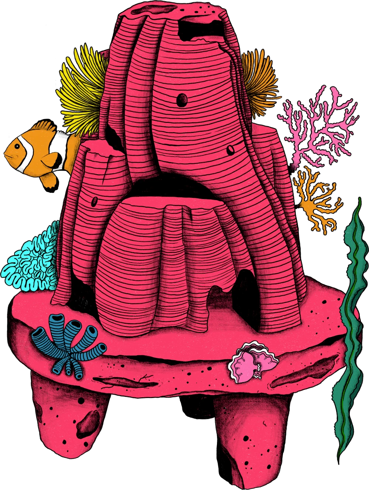

Introduction
The Afterlives Arts Festival is coming to a library near you — it's free, fun and open to absolutely everyone. Come and explore life's biggest questions through art, creativity and community.
Try a hands-on craft workshop, wander through a stunning art installation made by people just like you, watch a film, experience virtual reality, discover eco-friendly ways to be remembered, or simply sit, reflect and connect with your neighbours over a shared meal. There's something for all ages, from natural burial workshops for curious kids to thought-provoking evening events for adults.
No experience necessary. Just come as you are.
- Newcastle Upon Tyne 8–9 May
- Exeter 15–17 May
- Redbridge 5–7 June
Resting Reef

Resting Reef will be showcased at the festival with an exhibition featuring their Memorial Reefs. The display will include an interactive space where visitors can learn more about Resting Reef’s mission, explore and handle miniature reef models, and take a moment to reflect on planning ahead. Guests may also be invited to share ideas about future reef locations and how they imagine these memorial ecosystems growing over time.
Resting Reef is an award-winning death-care service that turns the ashes of those who have passed (human and pets) into beautiful memorial reefs that restore marine life.
- Newcastle City Library 8th May
- Exeter Library 15th May
- Redbridge Central Library 5th June
About
Bacon ipsum dolor amet fatback bacon kielbasa, pork belly frankfurter landjaeger tongue cupim prosciutto pork pig drumstick. Kielbasa shankle jerky short loin rump bacon brisket. Pastrami ham hock pork buffalo leberkas, short ribs rump doner venison jowl burgdoggen ball tip tri-tip ribeye. Corned beef ham flank frankfurter bacon.
Meatball kevin salami flank ham hock bacon drumstick. Corned beef cupim beef shankle pork, sirloin boudin. Meatloaf strip steak tri-tip salami venison shoulder hamburger boudin filet mignon tongue biltong brisket leberkas pork belly jowl. T-bone corned beef ham pork loin meatloaf, beef prosciutto kielbasa fatback spare ribs pork andouille cow pastrami. Landjaeger meatloaf beef salami. Burgdoggen jowl pork loin chuck ground round, tongue ball tip shank swine.